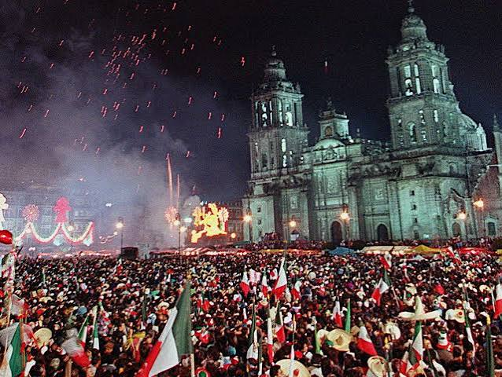

Se le conoce como Mes Patrio a septiembre (principalmente en México) porque durante estas semanas se concentran las fechas históricas más importantes ligadas a la Independencia y la soberanía del país.
